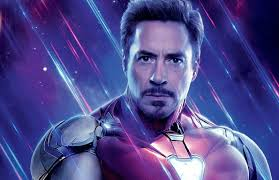
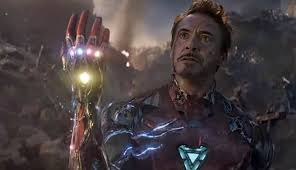

Bienvenido a nuestra página web dedicada a Iron Man, uno de los superhéroes más icónicos y fascinantes del universo Marvel. Desde su primera aparición en los cómics en 1963, Iron Man ha cautivado a millones de fans con su carisma, su ingenio y su valentía.
La historia de Iron Man comienza con Tony Stark, un genio multimillonario, que tras ser gravemente herido y secuestrado, utiliza su brillante mente para crear una armadura tecnológicamente avanzada que le permite convertirse en el invencible Iron Man. Desde entonces, Tony Stark ha luchado contra amenazas tanto terrenales como cósmicas, defendiendo al mundo con su ingenio, su coraje y su corazón de héroe.
SU VIDA POR LA HUMANIDAD